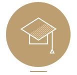
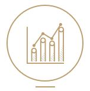
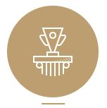
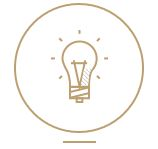
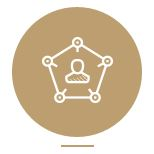
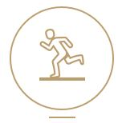

- 회사 소개
현대IT&E는 현대백화점그룹 내 IT서비스 지원과 엔터테인먼트
사업을 추진하고 있습니다.
현대백화점그룹의 IT지원과 시스템을 개발/운영하고, IT신기술
개발을 통한 그룹의 미래 신 성장동력 발굴 및 비즈니스 가치를
높이는데 집중하고 있습니다.
최적의 IT인프라 설계를 통해 현대백화점그룹 각 계열사(현대백화점,
현대홈쇼핑, 현대그린푸드, 현대렌탈케어, 현대드림투어, 한섬,
현대리바트, 현대백화점 Duty Free, 현대L&C) 비즈니스 환경에
최적화된 시스템 개발 및 운영, 서버·네트워크 인프라 구축
서비스를 제공합니다.
또한 기업내 중요 정보 및 고객정보 보호를 위해 정보보안 컨설팅,
보안솔루션 개발, 교육 컨텐츠 제작, 모의해킹/취약점 관리 등의
서비스를 제공하고 있습니다. 이 외에도 현대백화점 그룹 내의
유통, 미디어, 식품, 제조, 여행 등에서 전산 관련 다양한
서비스를 하고 있으며, 이러한 서비스 운영 노하우를 바탕으로
월등한 IT경쟁력을 키우고 지속적으로 성장해가고 있습니다.
현대IT&E는 최신 IT트렌드를 연구하며 미래 신기술 발굴에 최선을
다하고 있습니다. 다양한 사업분야에 미래 신기술들을 접목하여
새로운 가치를 창출하고 끊임없는 연구를 통해 미래 ICT 기술을
선도하는 기업으로 성장해 나아갈 것입니다.
- 직무 소개
IT 직무소개
현대IT&E는 현대백화점그룹 IT 전반을 담당하고 있습니다.
현대백화점, 현대홈쇼핑, 현대그린푸드, 현대렌탈케어, 현대드림투어,
한섬, 현대리바트, 현대백화점 Duty Free, 현대L&C 각 계열사의 IT자원과
시스템을 개발/운영하고 정보와 지식을 효율적으로 집적하며 비즈니스
가치를 높이는 역량을 집중하고 있습니다.
어플리케이션 개발 및 운영
IT에서 개발/도입한 시스템 기반하에 모든 영업 및 마케팅 등의
업무가 이루어 집니다.
현대백화점 그룹 내 계열사마다 온오프라인의 특성에 맞는 어플리케이션을
개발/운영되어지고 이렇게 창조된 어플리케이션은 백화점 그룹의 중요한
노하우이며, 지식자산 입니다.
내부고객(이하 현업)으로부터 요청된 업무는 회의를 통해 요구사항을
분석하고 프로세스를 설계하는 과정이 업무의 시작입니다. 설계된
결과를 토대로 투자계획 및 개발계획을 유관부서의 협조를 받아
산출합니다. 산출된 사항은 다양한 방법(자체개발,외부프로젝트 등)과
개발언어(Java,HTML,C,Oracle 등) 그리고 여러가지
매체(POS,웹,모바일,IVR,IPTV 등)를 통해 구현됩니다.
수행단계에서는 프로젝트 매니저, 프로젝트 사업관리, 분석설계,
개발 및 운영 등 분야별 세부 업무로 나누어 지며, 개발과정이
끝나면 테스트 과정을 거쳐 고객과 현업에게 서비스됩니다.
사업의 규모나 범위에 따라 개발과 운영 조직은 통합하기도
하고 분리하기도 합니다.
현 시스템의 운영 및 유지보수, 현업 비즈니스 확대, 신규사업 진출
등의 새로운 시스템 개발수요에 대해 지속적인 개선을 시도합니다.
그 외에 비즈니스에 필요한 데이터 추출, 마케팅/영업을 위한
DW(데이터 분석) 시스템, POS/PDA/키오스크 장비 운영 및 개발
등을 운영하고 있습니다.
이러한 업무를 수행하기 위해서는 대인관계 능력, 비즈니스 업무
이해력, 프로그램 설계 및 개발기술력, 프로젝트 관리 역량에 대한
열정과 자질이 필요합니다.
인프라 운영
인프라 운영은 시스템을 안정적이고 효율적으로 운영하고 관리하는 것이
주요 임무입니다. 이를 위해서는 사전 예방활동이 중요하며 이슈발생시
영업에 지장을 최소화하여 정상화시키는 것이 핵심 능력입니다.
주요 인프라는 서버, 네트워크, 데이타베이스, 콜센터 등 입니다.
또한, 이들을 컨트롤하는 시스템SW/운영체제/모니터링 솔루션 등의 무형
자산도 포함됩니다.
계열사를 하나의 그룹 네트워크로 묶고, 그 안에서 각각 계열사 장비가
업무 특성에 맞게 소그룹 네트워크로 구성됩니다. 신규사업 또는 비즈니스
변화, 보안요건의 변화에 따라 인프라를 분석하고 투자범위를 산출하며
인프라 구조를 재설계 후 적용하는 업무를 수행합니다. 특히, 신규
장비의 특성을 분석하고 최신 기술을 연구하여 기존 인프라의
교체/재배치 등 구조변경을 통해 무장애, 트래픽 과다, 외부침입,
TCO 절감 등 개선 업무도 중용한 수행업무 입니다. 또한
대외기관과의 연계시스템 관리 업무를 수행합니다. DBA는
DB모델링이 잘 설계되고 변화되고 있는지 확인하고 지속적인
튜닝(DDL,SQL)을 통해 데이터의 안정성/가용성/무결성 확보를
위해 노력합니다.
콜센터는 일반 서버와는 다소 성격이 다른 CTi,IVR 장비 및 관련 SW로
이루어져 있고 필요시 어플리케이션 담당자들과 긴밀한 협조체계를
유지합니다.
이러한 업무를 수행하기 위해서는 인프라에 관련된 전문지식이 풍부할수록
좋습니다.
비즈니스 업무 이해력, 신속한 문제해결능력, 인프라 관련 경험, 대인관계
능력이 요구되는 업무입니다.
IT 내부에서도 특화된 전문분야로서 대형 인프라를 운영 관리하고 관련된
경험 및 노하우를 축적할 수 있습니다.
- 인사 제도
능력위주의 인사제도,
가족처럼 화합하는 기업문화
현대백화점그룹은 학력, 연령, 성별 등 개인의 속인적 요인에 따른
차별이 없는 능력주의 인사를 기본원칙으로 하여 다양한 인사제도를
도입하여 실시하는 한편 모든 직원들이 가족처럼 화합하는 기업문화
속에서 신명나게 일할 수 있도록 제도적 지원을 아끼지 않고 있습니다.
인사원칙
|  |  |
 |
| 능력개발지원 | 성과 중시 | 성과에
상응하는 보상 |
인재로 성장할 수 있는 여건 및 기획 제공
자기계발 노력 적극 지원
직속 상사가 인재육성 책임 | 성과를 주된 기준으로 사람을 확보, 육성
평가하는 인적자원 관리 활동 전개 | 공정한 기준에 따라 평가
조직별
개인별 기여도에 따라 보상 |
|  |  |
 |
| 개인의 창의와 자율 존중 | 공평한 기회 제공 |
현장 중시 |
개개인의 창의성과 개성을 존중
업무목표 및 방향을 명확히 제시하고
최대한의 자율 부여 | 능력과 자질에 따라 공평한 기회 제공
공정한 기준과 절차를 수립 및 운영 | 현장에 권한과 책임을 최대한 부여
자발적 참여의 풍토를 조성 |
직급 체계
클릭하세요